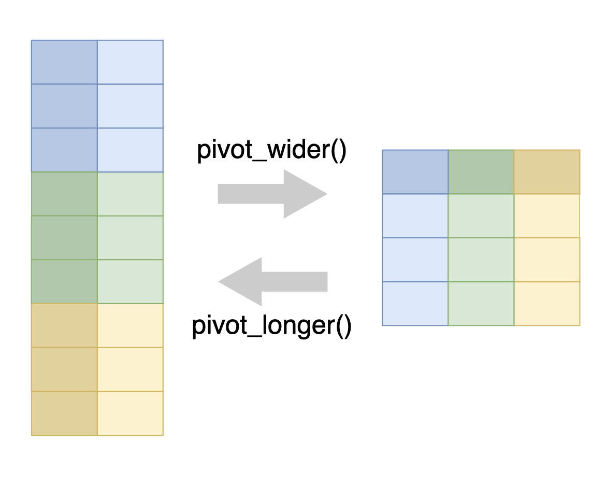
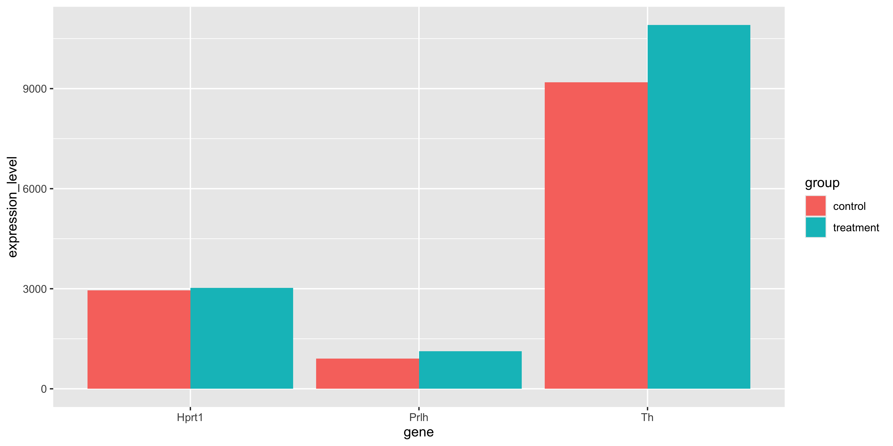
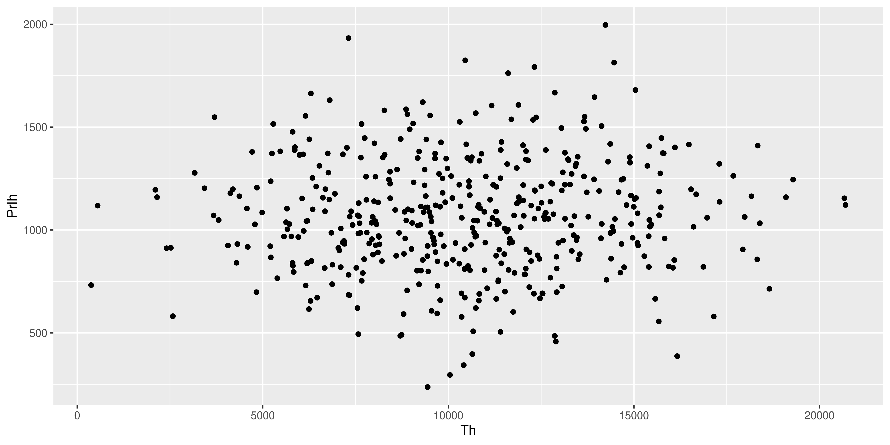
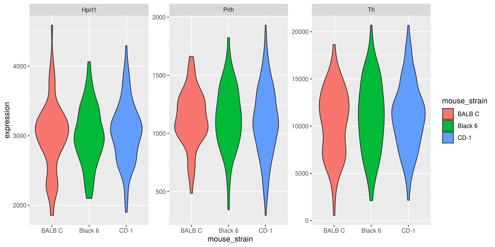
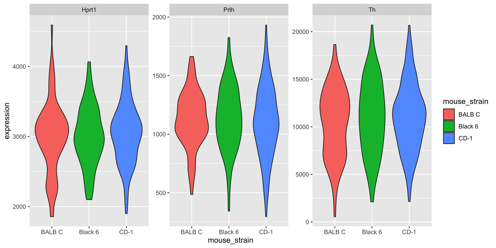
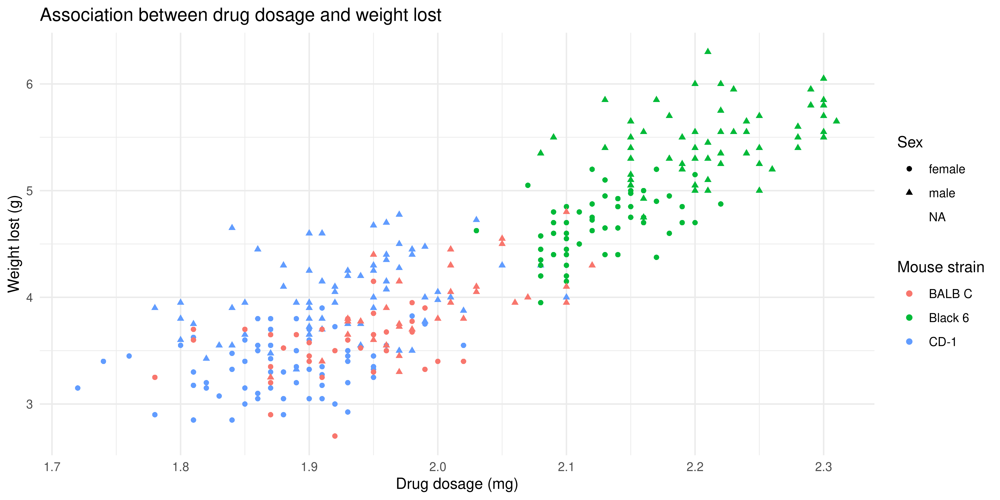
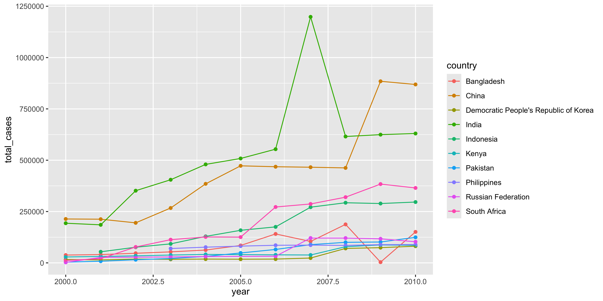

dir.create("data") # create data directory if it doesn't exist
download.file("https://raw.githubusercontent.com/kzeglinski/new_wehi_r_course/refs/heads/main/data/mousezempic_expression_data.tsv", "data/mousezempic_expression_data.tsv") # download data4 Session 4: Putting it all together
In this session we will combine all the skills we have learned so far to perform a complete analysis of a small dataset.
Learning Objectives
At the end of this session, learners should be able to:
Describe the key steps in data analysis (exploration, manipulating and plotting)
Understand how pivot and join functions can be used to reshape and combine entire data frames
4.1 Introduction to the dataset
In this session we will use the mousezempic_dosage_data and mousezempic_expression_data data frames, which contain information about the mice and their gene expression levels, respectively.
library(tidyverse)
library(patchwork)
# read in dosage data
mousezempic_dosage_data <- read_csv("data/mousezempic_dosage_data.csv")
mousezempic_dosage_data# A tibble: 344 × 9
mouse_strain cage_number weight_lost_g replicate sex drug_dose_g
<chr> <chr> <dbl> <chr> <chr> <dbl>
1 CD-1 1A 3.75 rep1 male 0.00181
2 CD-1 1A 3.8 rep1 female 0.00186
3 CD-1 1A 3.25 rep1 female 0.00195
4 CD-1 1A NA rep1 <NA> NA
5 CD-1 1A 3.45 rep1 female 0.00193
6 CD-1 1A 3.65 rep1 male 0.0019
7 CD-1 1A 3.62 rep1 female 0.00181
8 CD-1 1A 4.68 rep1 male 0.00195
9 CD-1 1A 3.48 rep1 <NA> 0.00193
10 CD-1 1A 4.25 rep1 <NA> 0.0019
# ℹ 334 more rows
# ℹ 3 more variables: tail_length_mm <dbl>, initial_weight_g <dbl>,
# id_num <dbl># read in expression data
mousezempic_expression_data <- read_tsv("data/mousezempic_expression_data.tsv")
mousezempic_expression_data# A tibble: 453 × 11
id_num Th_rep1 Th_rep2 Th_rep3 Prlh_rep1 Prlh_rep2 Prlh_rep3 Hprt1_rep1
<dbl> <dbl> <dbl> <dbl> <dbl> <dbl> <dbl> <dbl>
1 1 1431. 2737. 2036. 297. 428. 320. 741.
2 2 2699. 4180. 3860. 388. 680. 500. 843.
3 3 3596. 5194. 4128. 201. 346. 266. 1047.
4 4 2723. 4442. 3728. 317. 576. 478. 541.
5 5 2197. 3656. 2887. 114. 205. 173. 798.
6 6 2316. 3949. 3355. 242. 383. 305. 763.
7 7 1570. 2740. 2129. 294. 489. 427. 796.
8 8 2683. 4749. 3563. 231. 400. 309. 922.
9 9 3023. 5170. 3830. 289. 464. 390. 921.
10 10 3254. 5980. 4250. 337. 583. 436. 740.
# ℹ 443 more rows
# ℹ 3 more variables: Hprt1_rep2 <dbl>, Hprt1_rep3 <dbl>, group <chr>
Note
We have used read_csv() for the mouse data and read_tsv() for the expression data. These are for reading data separated by commas and tab characters respectively. The readr package also provides read_delim() to let the package guess your delimiter, but if you know the format of your file then it’s good practice to use the appropriate reading function for more predictable behaviour.
Caution
There’s nothing stopping someone from naming a file file.csv while having tab-separated data inside. This happens quite often in real-world data so it’s a good idea to have a quick look at the data in an text editor before reading it in.
4.2 Tidy Data
The tidyverse revolves around an important concept called “tidy data”. This is a specific representation of tabular data that is considered easy to work with. Tidy data is roughly defined as tabular data that contains:
- Individual variables in columns
- Individual observations in rows
- One data value in each cell
Having individual variables in columns makes then accessible for performing tidyverse operations like select(), mutate(), filter() and arrange(). If variables were not stored as columns then these functions would not be able to access them by name.
Having individual observations in rows is important because it associates all variables of each observation with the same row. If the data from one observation is spread across multiple rows then it is easy to incorrect summaries from the summarise() function. When using the filter() function with tidy data, you can expect to keep all the data for an observation or none at all. When the data for observations is split over different rows, it’s possible to unknowingly lose partial data from observations.
Having a single value in each cell makes it possible to perform meaningful computations for the values, for example you cannot take a mean() of a column of values that contain multiple different values.
Although tidy data is the easiest to work with, it’s often necessary to alter the format of your data for plotting or table displays. It’s a good idea to keep your core data in a tidy format and treating plot or table outputs as representations of that tidy data.
Note
Most data you encounter will not be tidy, the first part of data analysis is usually called “data-wranging” and involves tidying up your data so it is easier to use for downstream analysis.
4.3 Reshaping and combining data
The filter(), select(), mutate() and summarise() functions we learned last session all operate along either the columns or the rows of data. Combining these operations cleverly can answer the majority of questions about your data. However, there are two useful families of functions: pivot for reshaping your data and join for combining your data from shared columns.
4.3.1 Reshaping data with pivot functions
Pivoting is a way to change the shape of your tibble.
Pivoting longer reshapes the data to transfer data stored in columns into rows, resulting in more rows and fewer columns.
Pivoting wider is the reverse, moving data from rows into columns.

The pivot_longer() function is used to pivot data from wide to long format, and the pivot_wider() function is used to pivot data from long to wide format.
4.3.1.1 Pivot wider
A common use case for pivot_wider() is to make a contingency table, which shows the number of observations for each combination of two variables. This is often easier to read than the same information in long format.
For example, let’s say we want to create a table that shows how many mice there are of each strain, in each cage number. We can achieve this in a long format using summarise() as we learned in the previous section:
mousezempic_dosage_data %>%
summarise(
n_mice = n(),
.by = c(cage_number, mouse_strain))# A tibble: 5 × 3
cage_number mouse_strain n_mice
<chr> <chr> <int>
1 1A CD-1 52
2 3E CD-1 44
3 2B CD-1 56
4 3E Black 6 124
5 2B BALB C 68For the specific task of counting, we can achieve the same effect using the count() tidyverse function.
mousezempic_dosage_data %>%
count(cage_number, mouse_strain, name = "n_mice")# A tibble: 5 × 3
cage_number mouse_strain n_mice
<chr> <chr> <int>
1 1A CD-1 52
2 2B BALB C 68
3 2B CD-1 56
4 3E Black 6 124
5 3E CD-1 44This summarises by each combination of cage_number and mouse_strain, with the n() function giving the count of data belonging to that combination.
To get a contingency table, we wish to have the information in the mouse_strain column displayed along the column names and the values of n_mice becoming the values of the cells in the new table. Since the goal is to make the table wider, we use the pivot_wider() function. To achieve this, we instruct the pivot_wider() function to take names from the mouse_strain column and the values from the n_mice column.
mousezempic_dosage_data %>%
count(cage_number, mouse_strain, name = "n_mice") %>%
pivot_wider(names_from = mouse_strain, values_from = n_mice)# A tibble: 3 × 4
cage_number `CD-1` `BALB C` `Black 6`
<chr> <int> <int> <int>
1 1A 52 NA NA
2 2B 56 68 NA
3 3E 44 NA 124This has transformed our data into a contingency table, with NA where no data corresponding data exists for the specific cage_number and mouse_strain combination.
We can do the same thing to see how many of each mouse strains is in each of our experiment replicates.
mousezempic_dosage_data %>%
count(replicate, mouse_strain, name = "n_mice") %>%
pivot_wider(names_from = mouse_strain, values_from = n_mice)# A tibble: 3 × 4
replicate `BALB C` `Black 6` `CD-1`
<chr> <int> <int> <int>
1 rep1 26 34 50
2 rep2 18 46 50
3 rep3 24 44 524.3.1.2 Pivot longer
Data can often arrive in the form similar to the contingency table we constructed. Although this data is easy to read, it is difficult to operate on using tidyverse functions because the mouse_strain data is now stored in the column names and not inside a column we can use as a variable. In order to make this kind of data tidy, we use the pivot_longer() function, which will create a pair of columns from the column names and the value of the corresponding cell.
To demonstrate pivot_longer(), we will use the mousezempic_expression_data that we downloaded earlier. This data frame contains the expression levels of two genes (TH and PRLH) suspected to be upregulated in mice taking MouseZempic, as well as one housekeeping gene (HPRT1), all measured in triplicate.
mousezempic_expression_data# A tibble: 453 × 11
id_num Th_rep1 Th_rep2 Th_rep3 Prlh_rep1 Prlh_rep2 Prlh_rep3 Hprt1_rep1
<dbl> <dbl> <dbl> <dbl> <dbl> <dbl> <dbl> <dbl>
1 1 1431. 2737. 2036. 297. 428. 320. 741.
2 2 2699. 4180. 3860. 388. 680. 500. 843.
3 3 3596. 5194. 4128. 201. 346. 266. 1047.
4 4 2723. 4442. 3728. 317. 576. 478. 541.
5 5 2197. 3656. 2887. 114. 205. 173. 798.
6 6 2316. 3949. 3355. 242. 383. 305. 763.
7 7 1570. 2740. 2129. 294. 489. 427. 796.
8 8 2683. 4749. 3563. 231. 400. 309. 922.
9 9 3023. 5170. 3830. 289. 464. 390. 921.
10 10 3254. 5980. 4250. 337. 583. 436. 740.
# ℹ 443 more rows
# ℹ 3 more variables: Hprt1_rep2 <dbl>, Hprt1_rep3 <dbl>, group <chr>The data is currently in wide format, with each row representing a different mouse (identified by its id_num) and each column representing a different measurement of a gene. To reshape this data into a long format (where each measurement is contained on a separate row), we can use pivot_longer(), specifying three arguments:
cols: the columns to pivot from. You can use selection helpers likecontains()orstarts_with()to easily select multiple columns at once.names_to: the name of a new column that will contain the original column names.values_to: the name of a new column that will contain the values from the original columns.
In this particular case here’s what the code would look like:
mousezempic_expr_long <- mousezempic_expression_data %>%
pivot_longer(
cols = contains("_rep"),
names_to = "measurement",
values_to = "expression_level"
)
mousezempic_expr_long# A tibble: 4,077 × 4
id_num group measurement expression_level
<dbl> <chr> <chr> <dbl>
1 1 treatment Th_rep1 1431.
2 1 treatment Th_rep2 2737.
3 1 treatment Th_rep3 2036.
4 1 treatment Prlh_rep1 297.
5 1 treatment Prlh_rep2 428.
6 1 treatment Prlh_rep3 320.
7 1 treatment Hprt1_rep1 741.
8 1 treatment Hprt1_rep2 1300.
9 1 treatment Hprt1_rep3 988.
10 2 treatment Th_rep1 2699.
# ℹ 4,067 more rows
Perplexed by pivoting?
Pivoting can be a bit tricky to get your head around! Often when you’re doing analysis, you’ll run into the problem of knowing that you need to pivot, but not knowing exactly what arguments to use. In these cases, it can be helpful to look at examples online, like those in the R for Data Science book.
4.3.2 Separating data in a column
When we look at the measurement column we see that it contains two pieces of information. The gene being measured and the replicate number separated by “_“. We can use the separate() function to split this data into individual columns so that one column does not contain multiple variables.
mousezempic_expr_separate <- mousezempic_expr_long %>%
separate(measurement, into = c("gene", "replicate"), sep = "_")
mousezempic_expr_separate# A tibble: 4,077 × 5
id_num group gene replicate expression_level
<dbl> <chr> <chr> <chr> <dbl>
1 1 treatment Th rep1 1431.
2 1 treatment Th rep2 2737.
3 1 treatment Th rep3 2036.
4 1 treatment Prlh rep1 297.
5 1 treatment Prlh rep2 428.
6 1 treatment Prlh rep3 320.
7 1 treatment Hprt1 rep1 741.
8 1 treatment Hprt1 rep2 1300.
9 1 treatment Hprt1 rep3 988.
10 2 treatment Th rep1 2699.
# ℹ 4,067 more rows4.3.3 Summarising values
Now suppose we wanted to combine the gene expression data across replicates by adding them up, we can use the summarise() function to do so.
mz_expr_rep_summed <- mousezempic_expr_separate %>%
summarise(
expression_level = sum(expression_level),
.by = c(id_num, group, gene)
)
mz_expr_rep_summed# A tibble: 1,359 × 4
id_num group gene expression_level
<dbl> <chr> <chr> <dbl>
1 1 treatment Th 6204.
2 1 treatment Prlh 1045.
3 1 treatment Hprt1 3029.
4 2 treatment Th 10738.
5 2 treatment Prlh 1568.
6 2 treatment Hprt1 3669.
7 3 treatment Th 12918.
8 3 treatment Prlh 813.
9 3 treatment Hprt1 4297.
10 4 treatment Th 10892.
# ℹ 1,349 more rowsWe may also want to get the average expression level of each gene within each experimental group and plot it as a bar chart.
mz_expr_rep_summed %>%
summarise(
expression_level = mean(expression_level),
.by = c(group, gene)
) %>%
ggplot(aes(x = gene, y = expression_level, fill = group)) +
geom_col(position = "dodge")
We see that all 3 genes are slightly higher in the treatment group.
4.3.4 Reshaping for plotting
Suppose we wanted to plot the value of two genes against each other. We would need the expression values of genes to be in individual columns. However we have lost this structure after using pivot_longer(). We can restore it using pivot_wider() after we have summarised the replicates.
mz_expr_rep_summed_wide <- pivot_wider(mz_expr_rep_summed, names_from = "gene", values_from = "expression_level")
mz_expr_rep_summed_wide# A tibble: 453 × 5
id_num group Th Prlh Hprt1
<dbl> <chr> <dbl> <dbl> <dbl>
1 1 treatment 6204. 1045. 3029.
2 2 treatment 10738. 1568. 3669.
3 3 treatment 12918. 813. 4297.
4 4 treatment 10892. 1371. 2213.
5 5 treatment 8740. 491. 3159.
6 6 treatment 9620. 930. 2875.
7 7 treatment 6440. 1211. 3339.
8 8 treatment 10996. 939. 3854.
9 9 treatment 12022. 1144. 3781.
10 10 treatment 13485. 1356. 2848.
# ℹ 443 more rowsWith the replicate aggregated expression levels in individual columns, we can now plot the gene expression values against each other.
ggplot(mz_expr_rep_summed_wide, aes(x = Th, y = Prlh)) +
geom_point()
Practice exercise
Make all the pair-wise scatter plots and assemble them together using patchwork. There should be a plot of: - Th vs Prlh - Th vs Hprt1 - Prlh vs Hprt1
4.3.5 Combining data with join functions
Data analysis typically involves multiple tables of data. Often there will be tables that are contain related information that must be combined to answer the questions you’re interested in. Tables that are related to each other tend to have one or more columns in common, and are referred to as “relational data”. Combining relational data in useful ways requires the join family of functions. In general joins can accomplish two tasks
- Add new variables to an existing table containing additional information.
- Filter observations in one table based on whether or not they match observations in another table.
- Both of the above at the same time.

A common and basic join is the left_join(). It takes two data frame as arguments and optionally a vector of common columns to perform the join on. The reason it’s called a left-join because it retains all rows from the left data frame while adding on columns from the right data frame only when the data in the designed joining column(s) match.
For example, we can join the mousezempic_dosage_data data frame with the mz_expr_rep_summed_wide data frame based on the id_num column, which is common to both data frames:
left_join(mousezempic_dosage_data, mz_expr_rep_summed_wide, by = "id_num")# A tibble: 344 × 13
mouse_strain cage_number weight_lost_g replicate sex drug_dose_g
<chr> <chr> <dbl> <chr> <chr> <dbl>
1 CD-1 1A 3.75 rep1 male 0.00181
2 CD-1 1A 3.8 rep1 female 0.00186
3 CD-1 1A 3.25 rep1 female 0.00195
4 CD-1 1A NA rep1 <NA> NA
5 CD-1 1A 3.45 rep1 female 0.00193
6 CD-1 1A 3.65 rep1 male 0.0019
7 CD-1 1A 3.62 rep1 female 0.00181
8 CD-1 1A 4.68 rep1 male 0.00195
9 CD-1 1A 3.48 rep1 <NA> 0.00193
10 CD-1 1A 4.25 rep1 <NA> 0.0019
# ℹ 334 more rows
# ℹ 7 more variables: tail_length_mm <dbl>, initial_weight_g <dbl>,
# id_num <dbl>, group <chr>, Th <dbl>, Prlh <dbl>, Hprt1 <dbl>The mousezempic_dosage_data contains information about characteristics of each mouse, while the mz_expr_rep_summed_wide contains the replicate-summed gene expressions of the mice. Each data frame has an id_num column that relates the data from the two data frames together, and we have joined them into one table that contains both the data about the mice as well as the expression of their genes.
With the left_join(), if there is a id_num value that exists in the right data frame but not found in the left, then that data will not be present in the joined table. For any id_num that appears only in the left but not the right data frame, the values in the newly created columns will be NA.
Caution
If the values from the left data frame matches to multiple rows of the column in the right data frame, the left_join() will duplicate the data from the left data frame for each match to the right. This can cause issues with downstream summarisation if not carefully considered.
4.3.5.1 Joining with mismatched column names
Often the column containing the matching information has different names in different data frames. For example what might be called “id_num” in one data frame could also be called “mouse_id” in another data frame. In those cases the by argument of left_join() can be formatted to let the function know which column in the left data frame matches to which column on the right.
We will demonstrate this by renaming the id_num column in the mousezempic_dosage_data to mouse_id and using it to perform the join instead. We will use the join_by(mouse_id == id_num) helper function for the by argument to specify the different columns we wish to join by.
# rename id_num to mouse_id
mz_dosage_data_new <- mousezempic_dosage_data %>%
rename(mouse_id = id_num)
mz_dosage_data_new# A tibble: 344 × 9
mouse_strain cage_number weight_lost_g replicate sex drug_dose_g
<chr> <chr> <dbl> <chr> <chr> <dbl>
1 CD-1 1A 3.75 rep1 male 0.00181
2 CD-1 1A 3.8 rep1 female 0.00186
3 CD-1 1A 3.25 rep1 female 0.00195
4 CD-1 1A NA rep1 <NA> NA
5 CD-1 1A 3.45 rep1 female 0.00193
6 CD-1 1A 3.65 rep1 male 0.0019
7 CD-1 1A 3.62 rep1 female 0.00181
8 CD-1 1A 4.68 rep1 male 0.00195
9 CD-1 1A 3.48 rep1 <NA> 0.00193
10 CD-1 1A 4.25 rep1 <NA> 0.0019
# ℹ 334 more rows
# ℹ 3 more variables: tail_length_mm <dbl>, initial_weight_g <dbl>,
# mouse_id <dbl># perform left join by matching mouse_id of the left data frame to id_num of the right data frame
mz_joined_data <- left_join(
mz_dosage_data_new, mz_expr_rep_summed_wide,
by = join_by(mouse_id == id_num)
) %>%
drop_na() # keep only rows without NA
mz_joined_data# A tibble: 333 × 13
mouse_strain cage_number weight_lost_g replicate sex drug_dose_g
<chr> <chr> <dbl> <chr> <chr> <dbl>
1 CD-1 1A 3.75 rep1 male 0.00181
2 CD-1 1A 3.8 rep1 female 0.00186
3 CD-1 1A 3.25 rep1 female 0.00195
4 CD-1 1A 3.45 rep1 female 0.00193
5 CD-1 1A 3.65 rep1 male 0.0019
6 CD-1 1A 3.62 rep1 female 0.00181
7 CD-1 1A 4.68 rep1 male 0.00195
8 CD-1 1A 3.2 rep1 female 0.00182
9 CD-1 1A 3.8 rep1 male 0.00191
10 CD-1 1A 4.4 rep1 male 0.00198
# ℹ 323 more rows
# ℹ 7 more variables: tail_length_mm <dbl>, initial_weight_g <dbl>,
# mouse_id <dbl>, group <chr>, Th <dbl>, Prlh <dbl>, Hprt1 <dbl>
Note
When joining data frames with mismatched column names, the column name from the left data frame argument will be retained for the joined result.
Note
An older syntax exists for the by argument that would look like by = c("mouse_id" = "id_num"). This does the same thing as what is shown above but the documentation now recommends the new syntax which allows for flexible options like joining to the closest.
4.4 Visualising the expression between strains
With the joined data we now have more information about the mice in addition to the expression data. So we can check if there is any significant difference in gene expressions between mouse strains.
ggplot(mz_joined_data, aes(x = mouse_strain, y = Th, fill = mouse_strain)) +
geom_violin()
If we wanted to plot all 3 genes, one way is to make 3 different plots, but we can also use facets. However to use facets we would need to have the faceting variable in a column, and currently our gene names are in the column names. So we must use pivot_longer().
mz_joined_data_longer <- mz_joined_data %>%
pivot_longer(cols = c(Th, Prlh, Hprt1), names_to = "gene", values_to = "expression")
mz_joined_data_longer# A tibble: 999 × 12
mouse_strain cage_number weight_lost_g replicate sex drug_dose_g
<chr> <chr> <dbl> <chr> <chr> <dbl>
1 CD-1 1A 3.75 rep1 male 0.00181
2 CD-1 1A 3.75 rep1 male 0.00181
3 CD-1 1A 3.75 rep1 male 0.00181
4 CD-1 1A 3.8 rep1 female 0.00186
5 CD-1 1A 3.8 rep1 female 0.00186
6 CD-1 1A 3.8 rep1 female 0.00186
7 CD-1 1A 3.25 rep1 female 0.00195
8 CD-1 1A 3.25 rep1 female 0.00195
9 CD-1 1A 3.25 rep1 female 0.00195
10 CD-1 1A 3.45 rep1 female 0.00193
# ℹ 989 more rows
# ℹ 6 more variables: tail_length_mm <dbl>, initial_weight_g <dbl>,
# mouse_id <dbl>, group <chr>, gene <chr>, expression <dbl>Now that the gene variable is in a column, we can use this information to create our faceted plot. We use facet_wrap() with the scales = "free_y" argument so each gene can have its own y-axis.
ggplot(mz_joined_data_longer, aes(x = mouse_strain, y = expression, fill = mouse_strain)) +
geom_violin() +
facet_wrap(~gene, scales = "free_y")
There doesn’t appear to be clear differences in the expression of these three genes between the haplotypes.
4.5 Visualising the relationship between dosage and genes
With the joined data frame we can also visualise the relationship between the drug dosage and the genes, separated by mouse strain. We do this by using our mz_joined_data_longer to plot with facet_grid() specifying the layout of our grid.
ggplot(mz_joined_data_longer, aes(x = drug_dose_g, y = expression, color = mouse_strain)) +
geom_point() +
geom_smooth(method = "lm") +
facet_grid(cols = vars(mouse_strain), rows = vars(gene), scales = "free")`geom_smooth()` using formula = 'y ~ x'
Although very minor, there appears to be some effect of dosage on gene expression that is strain specific.
4.6 Another case study - WHO tuberculosis data
We can look at another dataset containing tuberculosis (TB) cases broken down by year, country, age, gender, and diagnosis method. The data comes from the 2014 World Health Organization Global Tuberculosis Report and is typical of many real-life datasets in terms of structure. There are redundant columns, odd variable codes and missing values.
We want to tidy it up using the tools we have learned in order to try to extract some information from this data.
who# A tibble: 7,240 × 60
country iso2 iso3 year new_sp_m014 new_sp_m1524 new_sp_m2534 new_sp_m3544
<chr> <chr> <chr> <dbl> <dbl> <dbl> <dbl> <dbl>
1 Afghani… AF AFG 1980 NA NA NA NA
2 Afghani… AF AFG 1981 NA NA NA NA
3 Afghani… AF AFG 1982 NA NA NA NA
4 Afghani… AF AFG 1983 NA NA NA NA
5 Afghani… AF AFG 1984 NA NA NA NA
6 Afghani… AF AFG 1985 NA NA NA NA
7 Afghani… AF AFG 1986 NA NA NA NA
8 Afghani… AF AFG 1987 NA NA NA NA
9 Afghani… AF AFG 1988 NA NA NA NA
10 Afghani… AF AFG 1989 NA NA NA NA
# ℹ 7,230 more rows
# ℹ 52 more variables: new_sp_m4554 <dbl>, new_sp_m5564 <dbl>,
# new_sp_m65 <dbl>, new_sp_f014 <dbl>, new_sp_f1524 <dbl>,
# new_sp_f2534 <dbl>, new_sp_f3544 <dbl>, new_sp_f4554 <dbl>,
# new_sp_f5564 <dbl>, new_sp_f65 <dbl>, new_sn_m014 <dbl>,
# new_sn_m1524 <dbl>, new_sn_m2534 <dbl>, new_sn_m3544 <dbl>,
# new_sn_m4554 <dbl>, new_sn_m5564 <dbl>, new_sn_m65 <dbl>, …The first thing we notice is that country, iso2 and iso3 all seem to be different encodings for the country. The year column is fine as a variable but the rest of the columns seem appear to be coding values in the column names. There are numeric values in the cells, and since we know this dataset is supposed to contain case numbers, and no column clearly denotes this, we suspect that the values in the columns are case numbers with the column names being descriptive of the cases.
Since we believe that many of these column names are in fact encoding data, we want to pivot_longer() to put that information in a column for further processing.
# pivot longer with columns 5 to 60, drop NA values
who_longer <- who %>%
pivot_longer(
cols = 5:60, # alternatively contains("_")
names_to = "description",
values_to = "cases",
values_drop_na = TRUE
)
who_longer# A tibble: 76,046 × 6
country iso2 iso3 year description cases
<chr> <chr> <chr> <dbl> <chr> <dbl>
1 Afghanistan AF AFG 1997 new_sp_m014 0
2 Afghanistan AF AFG 1997 new_sp_m1524 10
3 Afghanistan AF AFG 1997 new_sp_m2534 6
4 Afghanistan AF AFG 1997 new_sp_m3544 3
5 Afghanistan AF AFG 1997 new_sp_m4554 5
6 Afghanistan AF AFG 1997 new_sp_m5564 2
7 Afghanistan AF AFG 1997 new_sp_m65 0
8 Afghanistan AF AFG 1997 new_sp_f014 5
9 Afghanistan AF AFG 1997 new_sp_f1524 38
10 Afghanistan AF AFG 1997 new_sp_f2534 36
# ℹ 76,036 more rowsIt doesn’t look like the values in description are unique, so we can try to count them to get a sense of what we’re dealing with. It will show us the unique values as well as the counts for each value.
who_longer %>%
count(description)# A tibble: 56 × 2
description n
<chr> <int>
1 new_ep_f014 1032
2 new_ep_f1524 1021
3 new_ep_f2534 1021
4 new_ep_f3544 1021
5 new_ep_f4554 1017
6 new_ep_f5564 1017
7 new_ep_f65 1014
8 new_ep_m014 1038
9 new_ep_m1524 1026
10 new_ep_m2534 1020
# ℹ 46 more rowsSome patterns emerge, and it maybe be possible to guess at exactly what these values mean. For example we see the presence of “m” and “f” in the encoding which probably encodes sex. Luckily we have a data dictionary ready from the source that tells us what this means.
- The first part tells us if the data is new or old, in this case all data is new.
- The next part describe the type of TB:
relfor relapseepfor extrapulmonarysnfor pulmonary TB that cannot be diagnosed with a pulmonary smear (smear negative)spfor pulmonary TB that can be diagnosed with a smear (smear positive)
- The sex of the patient. Males and females denoted by
mandfrespectively. - The 7 age groups the data is divided into:
014: 0 - 14 years old1524: 15 - 24 years old2534: 25 - 34 years old3544: 35 - 44 years old4554: 45 - 54 years old5564: 55 - 64 years old65: 65 or older
4.6.1 String manupulation
Armed with that knowledge we can begin to tidy up our dataset! The first thing we will do is tidy up the description column, we will do this with some string manipulation functions from the tidyverse. These functions help us manipulate strings programatically and are essential in dealing with real-world data.
Some useful functions for string manipulation include:
str_replace(string, pattern, replacement): replaces the pattern in the string with the replacement.str_extract(string, pattern): extracts the part of the string matching the pattern.str_remove(string, pattern): removes the part of the string matching the pattern.
The full list of functions can be found in the stringr package documentation and patterns can be written in very powerful ways with regular expressions. For our purposes we will just use simply fixed patterns.
We saw previously that we can use separate() to break apart on column into multiple columns. However, we see there is a problem in this dataset where the cases that are marked as relapse are encoded newrel which doesn’t leave us with a separator to use. We can remedy this by using a combination of mutate() and str_replace() to replace all instances of newrel with new_rel.
who_longer <- who_longer %>%
mutate(description = str_replace(description, "newrel", "new_rel"))
who_longer# A tibble: 76,046 × 6
country iso2 iso3 year description cases
<chr> <chr> <chr> <dbl> <chr> <dbl>
1 Afghanistan AF AFG 1997 new_sp_m014 0
2 Afghanistan AF AFG 1997 new_sp_m1524 10
3 Afghanistan AF AFG 1997 new_sp_m2534 6
4 Afghanistan AF AFG 1997 new_sp_m3544 3
5 Afghanistan AF AFG 1997 new_sp_m4554 5
6 Afghanistan AF AFG 1997 new_sp_m5564 2
7 Afghanistan AF AFG 1997 new_sp_m65 0
8 Afghanistan AF AFG 1997 new_sp_f014 5
9 Afghanistan AF AFG 1997 new_sp_f1524 38
10 Afghanistan AF AFG 1997 new_sp_f2534 36
# ℹ 76,036 more rowsSince every single observation contains only new cases and no old cases, the new_ portion of the encoding is redundant. So we can remove it using str_remove().
who_longer <- who_longer %>%
mutate(description = str_remove(description, "new_"))
who_longer# A tibble: 76,046 × 6
country iso2 iso3 year description cases
<chr> <chr> <chr> <dbl> <chr> <dbl>
1 Afghanistan AF AFG 1997 sp_m014 0
2 Afghanistan AF AFG 1997 sp_m1524 10
3 Afghanistan AF AFG 1997 sp_m2534 6
4 Afghanistan AF AFG 1997 sp_m3544 3
5 Afghanistan AF AFG 1997 sp_m4554 5
6 Afghanistan AF AFG 1997 sp_m5564 2
7 Afghanistan AF AFG 1997 sp_m65 0
8 Afghanistan AF AFG 1997 sp_f014 5
9 Afghanistan AF AFG 1997 sp_f1524 38
10 Afghanistan AF AFG 1997 sp_f2534 36
# ℹ 76,036 more rowsNow one last problem remains, there is no separator between the sex and age group. So we can once again use str_replace() to edit in an underscore. Note that we use "_f" and "_m" as our patterns as a precaution in case the letters naturally occur elsewhere in the encoding.
who_longer <- who_longer %>%
mutate(description = str_replace(description, "_f", "_f_")) %>%
mutate(description = str_replace(description, "_m", "_m_"))
who_longer# A tibble: 76,046 × 6
country iso2 iso3 year description cases
<chr> <chr> <chr> <dbl> <chr> <dbl>
1 Afghanistan AF AFG 1997 sp_m_014 0
2 Afghanistan AF AFG 1997 sp_m_1524 10
3 Afghanistan AF AFG 1997 sp_m_2534 6
4 Afghanistan AF AFG 1997 sp_m_3544 3
5 Afghanistan AF AFG 1997 sp_m_4554 5
6 Afghanistan AF AFG 1997 sp_m_5564 2
7 Afghanistan AF AFG 1997 sp_m_65 0
8 Afghanistan AF AFG 1997 sp_f_014 5
9 Afghanistan AF AFG 1997 sp_f_1524 38
10 Afghanistan AF AFG 1997 sp_f_2534 36
# ℹ 76,036 more rowsWith that we are finally able to separate the data into individual columns with separate().
who_separated <- who_longer %>%
separate(description, into = c("type", "sex", "age_group"), sep = "_")
who_separated# A tibble: 76,046 × 8
country iso2 iso3 year type sex age_group cases
<chr> <chr> <chr> <dbl> <chr> <chr> <chr> <dbl>
1 Afghanistan AF AFG 1997 sp m 014 0
2 Afghanistan AF AFG 1997 sp m 1524 10
3 Afghanistan AF AFG 1997 sp m 2534 6
4 Afghanistan AF AFG 1997 sp m 3544 3
5 Afghanistan AF AFG 1997 sp m 4554 5
6 Afghanistan AF AFG 1997 sp m 5564 2
7 Afghanistan AF AFG 1997 sp m 65 0
8 Afghanistan AF AFG 1997 sp f 014 5
9 Afghanistan AF AFG 1997 sp f 1524 38
10 Afghanistan AF AFG 1997 sp f 2534 36
# ℹ 76,036 more rowsBecause the columns iso2 and iso3 contain redundant information about the country, we can remove them, but also retain them for reference as we may want to know what the short forms of the countries are when relating it other tables. To do so we can select() the columns containing this information, then use distinct() to keep only unique rows.
country_codes <- who_separated %>%
select(country, iso2, iso3) %>%
distinct()
country_codes# A tibble: 219 × 3
country iso2 iso3
<chr> <chr> <chr>
1 Afghanistan AF AFG
2 Albania AL ALB
3 Algeria DZ DZA
4 American Samoa AS ASM
5 Andorra AD AND
6 Angola AO AGO
7 Anguilla AI AIA
8 Antigua and Barbuda AG ATG
9 Argentina AR ARG
10 Armenia AM ARM
# ℹ 209 more rowsWith that we can safely remove the redundant information from our data and end up with a tidy data frame.
who_tidy <- who_separated %>%
select(-iso2, -iso3)
who_tidy# A tibble: 76,046 × 6
country year type sex age_group cases
<chr> <dbl> <chr> <chr> <chr> <dbl>
1 Afghanistan 1997 sp m 014 0
2 Afghanistan 1997 sp m 1524 10
3 Afghanistan 1997 sp m 2534 6
4 Afghanistan 1997 sp m 3544 3
5 Afghanistan 1997 sp m 4554 5
6 Afghanistan 1997 sp m 5564 2
7 Afghanistan 1997 sp m 65 0
8 Afghanistan 1997 sp f 014 5
9 Afghanistan 1997 sp f 1524 38
10 Afghanistan 1997 sp f 2534 36
# ℹ 76,036 more rowsFrom there we can easily visualise various aspects of the data for analysis. For example we can see what country had the highest number of total cases in the year 2010.
who_tidy %>%
filter(year == 2010) %>%
summarise(total_cases = sum(cases), .by = country) %>%
arrange(desc(total_cases))# A tibble: 204 × 2
country total_cases
<chr> <dbl>
1 China 869092
2 India 630164
3 South Africa 364992
4 Indonesia 296272
5 Bangladesh 150856
6 Pakistan 124455
7 Russian Federation 102823
8 Philippines 89198
9 Kenya 85484
10 Democratic People's Republic of Korea 81240
# ℹ 194 more rowsWe can extract only the data from the top 10 countries based in 2010 cases and plot how their total case numbers between the years 2000 and 2010.
top_10_countries <- who_tidy %>%
filter(year == 2010) %>%
summarise(total_cases = sum(cases), .by = country) %>%
arrange(desc(total_cases)) %>%
slice(1:10)
top_10_countries# A tibble: 10 × 2
country total_cases
<chr> <dbl>
1 China 869092
2 India 630164
3 South Africa 364992
4 Indonesia 296272
5 Bangladesh 150856
6 Pakistan 124455
7 Russian Federation 102823
8 Philippines 89198
9 Kenya 85484
10 Democratic People's Republic of Korea 81240who_tidy %>%
filter(
country %in% top_10_countries$country,
year >= 2000,
year <= 2010
) %>%
summarise(
total_cases = sum(cases), .by = c(country, year)
) %>%
ggplot(aes(x = year, y = total_cases, col = country)) +
geom_point() +
geom_line()
4.7 Summary
Today we learned about the concept of “tidy data”. A particular form of tabular data that is particularly suitable for the tidyverse. It contains:
- one variable per column
- one observation per row
- one value per cell
We learned to reshape data frames using various functions powerful functions.
pivot_wider()reduces the number of rows and move information into new columns.pivot_longer()reduces the number of columns and increase the number of rows. Moving the column names into a new column.separate()separates multiple values encoded in a single column into individual columns based on a separator character.
We learned to combine data frames using the left_join() function. This allows us to merge data frames together that have common columns, matching up the rows according to the shared column.
left_join(left, right, by = shared_column)takes two data frames and merges them based on theshared_columncolumn. The information from the right data frame is added to the left if there is a match within the shared column.left_join(left, right, by = join_by(left_col_name == right_col_name))can be used to join using columns from two data frames that encode the same values but have different column names
We also learned some useful string manipulation functions that help us clean up data columns
str_replace()lets us replace patterns in a stringstr_remove()lets us remove patterns in a string
Together these make up a very versatile toolkit for transforming messy data you find in the wild into a tidy, more useful format to summarise information or produce plots with.